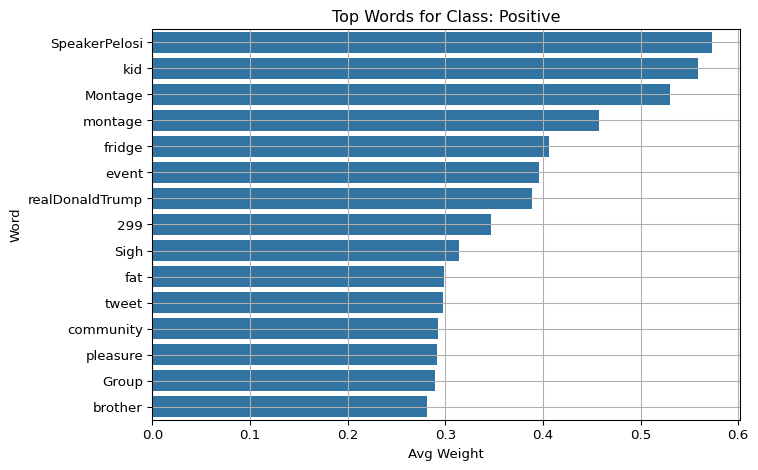
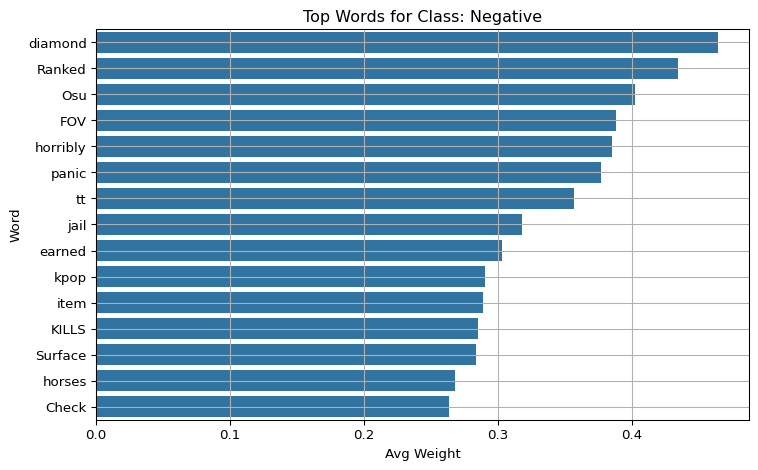

Evaluate and visualize word-level explanations for a baseline TF-IDF + Logistic Regression model using LIME on validation tweets.
6.2 Load Model and Validation Set
Load the pre-trained pipeline (TF-IDF + logistic regression), and select a sample of cleaned validation tweets for analysis. Also, initialize the LIME explainer with sentiment class labels.
Run LIME on each tweet to get the top 10 words contributing to the predicted label. For each explanation, store word-level weights in a structured format for analysis.
Group the results by predicted class and show the top 15 most important words for each class using bar plots. This gives insight into which words drive predictions for each sentiment category.
Code
import matplotlib.pyplot as pltimport seaborn as snsfor label in class_names: subset = df_weights[df_weights["pred_label"] == label] top_words = subset.groupby("word")["weight"].mean().sort_values(ascending=False).head(15) plt.figure(figsize=(8, 5)) sns.barplot(y=top_words.index, x=top_words.values) plt.title(f"Top Words for Class: {label}") plt.xlabel("Avg Weight") plt.ylabel("Word") plt.grid(True) plt.tight_layout() plt.show()


6.5 Overall Top 20 Word Importance
Aggregate word importance scores across all samples and display the top 20 words globally. This shows which words are most influential for the model overall.
Code
top_words = df_weights.groupby("word")["weight"].mean().sort_values(ascending=False).head(20)plt.figure(figsize=(7, 4))sns.barplot(y=top_words.index, x=top_words.values)plt.title("Top 20 Words by Average LIME Weight")plt.xlabel("Average Weight")plt.ylabel("Word")plt.grid(True)plt.tight_layout()plt.show()
This global bar plot highlights the top 20 words across all tweets, regardless of class. Words like “SpeakerPelosi”, “kid”, and “AWESOME” dominate, showing that they were consistently influential in driving the model’s decisions. This visualization offers a high-level summary of what the model deems important overall.
6.6 Word Cloud of Explanations
Visualize important words using a word cloud, where larger font size indicates higher average contribution to predictions. This is useful for presentations and high-level understanding.
Code
from wordcloud import WordCloudword_freq = df_weights.groupby("word")["weight"].mean().to_dict()wordcloud = WordCloud(width=800, height=400, background_color="white").generate_from_frequencies(word_freq)plt.figure(figsize=(12, 6))plt.imshow(wordcloud, interpolation="bilinear")plt.axis("off")plt.title("LIME Word Importance Cloud")plt.show()
The word cloud visually encodes the global importance of words. Larger font size corresponds to higher contribution. Words such as “Montage”, “AWESOME”, and “SpeakerPelosi” appear prominently. This format is useful for quick insights and visual storytelling in presentations.
6.7 Stability Analysis under Synonym Substitution
Code
from nltk.corpus import wordnetimport nltkimport randomimport numpy as npnltk.download("wordnet")def clean_text(text): no_emoji = emoji.replace_emoji(text, replace='') cleaned = no_emoji.encode("utf-8", errors="ignore").decode("utf-8", errors="ignore")return cleaneddef synonym_replace(text): words = clean_text(text).split() new_words = []for word in words: syns = wordnet.synsets(word)if syns and random.random() <0.2: lemmas = syns[0].lemma_names()if lemmas: new_words.append(lemmas[0].replace("_", " "))continue new_words.append(word)return" ".join(new_words)stability_scores = []for i inrange(len(val)): text = val.iloc[i]["tweet"] perturbed = synonym_replace(text) exp1 = explainer.explain_instance(text, model.predict_proba, num_features=10, top_labels=1, num_samples=100) exp2 = explainer.explain_instance(perturbed, model.predict_proba, num_features=10, top_labels=1, num_samples=100) words1 =set(w for w, _ in exp1.as_list(label=exp1.top_labels[0])) words2 =set(w for w, _ in exp2.as_list(label=exp2.top_labels[0])) jaccard =len(words1 & words2) /len(words1 | words2) stability_scores.append(jaccard)print(f"Average Jaccard similarity over {len(val)} samples: {np.mean(stability_scores):.3f}")
[nltk_data] Downloading package wordnet to
[nltk_data] C:\Users\16925\AppData\Roaming\nltk_data...
[nltk_data] Package wordnet is already up-to-date!
Average Jaccard similarity over 1000 samples: 0.663
6.8 Summary
We applied LIME to explain the predictions of a Logistic Regression sentiment model.
Top contributing words were visualized using bar plots and word clouds.
Stability under perturbations was evaluated via synonym substitution.
This helps us assess how interpretable and robust the baseline model’s predictions are.